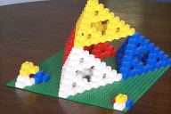
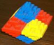
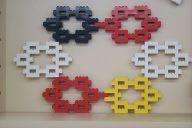
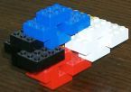
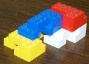

Build many fractals from lego
Shown here are some I have made over the years. Tell me of your efforts and I can place a link from here.
- 
- This Sierpinski pyramid was the first I made for my boys in the 1980s. It has a fractal dimension of exactly D=2 because to make a pyramid twice the (linear) size, you need four times as many blocks, and 4=2D, that is D=log4/log2. (See the Sierpinski triangles on each face.)
- 
- This octahedral structure is much more solid. Its fractal dimension is D=log6/log2=2.585 because to make an octahedron twice the size you need 6 times as many blocks.
- 
- David's flower was invented by a high school student at an Open Day at USQ about 2000. Its fractal dimension is D=log6/log3=1.631 because you need 6 times as many blocks to make a flower thrice the size. I call it "David's flower" because you may also view it as being made of a multitude of "Star of David"s. Can you see them?It is an amazing flower because it contains some other famous fractals: see the Koch curve outlined in the middle of the flower; and see sequences of transects that are classic stages in the formation of the Cantor set.
-  
- These two unamed fractals were made in response to the dual challenge of using up the 3x2 lego blocks and to make some asymmetric fractals. They both have dimension D=log5/log2=2.322 because you need five times as many blocks to make one of these things twice the size.
{kind=link}
{kind=link}
{kind=link}
{kind=link}
{kind=link}
Brief instructions
All of the above are regular fractals in that they are made from one unit, and then built up the same way by repeating the building of that one unit on larger and larger scales.
- Choose some simple basic unit made out of a few 2x2 lego block ("2x2 block" means a lego block with 2x2 little knobs on the top of the block). For example, see the little tetrahedron of four 2x2 blocks at the front of the Sierpinski pyramid---that is the pyramids basic unit from which it is built. For example, the flower is made from six 2x2 blocks: to two 2x2 blocks on the top and bottom (actually best implemented by two 3x2 blocks instead, one each on top and bottom); and two 2x2 blocks on either side.
- Let N be the number of 2x2 blocks forming the basic unit. Then attempt to build a bigger unit from N copies of the basic unit places in the same spatial arrangement as the N 2x2 blocks that form the basic unit. For example, to make the Sierpinski pyramid you make four of the little tetrahedrons of four 2x2 blocks, then put three down on the tablein a triangle, and connect the fourth on top by clicking in three knobs.
- It is at this stage you generally find out whether you can make the fractal, or not. The problem is that the fractal needs to be connected by the knobs on the lego blocks. Some basic units do not connect up when you try to make the units connect. For example, the flower does not click together, but fortunately we can make it by replacing the two side 2x2 blocks that abut each other, by one solid 4x2 block that then holds the two sides of the six units together.
- Now that you have made the next size up, just continue the same process but in larger and larger sizes. For the Sierpinski pyramid example, make four copies of the four bigger tetrahedra each made from four 2x2 blocks; then place three of the four bigger tetrahedra on the table in a triangle arrangement, and connect the fourth on top by clicking in the three corner knobs.
- At this stage in the Sierpinski pyramid you will start have big trouble trying to get it to all stay together. Replace some of the lines of multiple 2x2 blocks by 4x2 blocks and 8x2 blocks to provide greater strength. Indeed the basic unit is best made of one 4x2 block and two 2x2 blocks right at the start.
- This lego construction of fractals is more quickly done by coordinating groups of students to build simultaneously small versions of the fractal, then bringing these together to make the one big class fractal.
If you like this web page, please link to it so others can find it more easily.